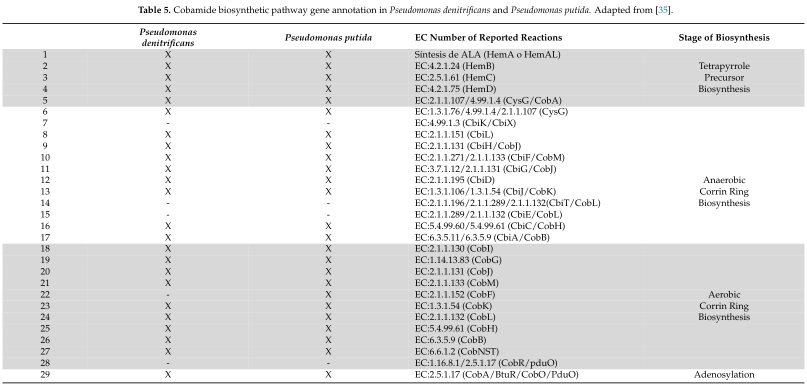

cobT encodes nicotinate-nucleotide--dimethylbenzimidazole phosphoribosyltransferase, the CobT enzyme that forms alpha-ribazole 5-phosphate from nicotinate mononucleotide and 5,6-dimethylbenzimidazole in lower-ligand assembly for cobalamin biosynthesis.
| GO Term | Evidence | Action | Reason |
|---|---|---|---|
|
GO:0008939
nicotinate-nucleotide-dimethylbenzimidazole phosphoribosyltransferase activity
|
IEA
GO_REF:0000120 |
ACCEPT |
Summary: The CobT phosphoribosyltransferase activity annotation is specific and correct.
Reason: UniProt assigns EC 2.4.2.21 and the alpha-ribazole 5-phosphate synthesis reaction for CobT.
Supporting Evidence:
file:PSEPK/cobT/cobT-uniprot.txt
Catalyzes the synthesis of alpha-ribazole-5'-phosphate from
file:PSEPK/cobT/cobT-uniprot.txt
EC=2.4.2.21
file:PSEPK/cobT/cobT-goa.tsv
GO:0008939 nicotinate-nucleotide-dimethylbenzimidazole phosphoribosyltransferase activity
file:PSEPK/cobT/cobT-deep-research-falcon.md
transferring a ribosyl-5′-phosphate moiety from **nicotinate mononucleotide (NaMN)** to the base (classically **5,6-dimethylbenzimidazole, DMB**) to form the **α-ribotide (α-ribazole-5′-phosphate; α-RP)**, releasing **nicotinic acid**
file:PSEPK/cobT/cobT-deep-research-falcon.md
CobT is the canonical **NaMN:base phosphoribosyltransferase** responsible for activating lower-ligand bases by forming an **α-riboside phosphate (α-ribotide)**.
|
|
GO:0009236
cobalamin biosynthetic process
|
IEA
GO_REF:0000002 |
ACCEPT |
Summary: Cobalamin biosynthesis is the appropriate biological-process context for CobT.
Reason: CobT catalyzes alpha-ribazole biosynthesis, a lower-ligand step feeding cobalamin biosynthesis. I checked the more specific alpha-ribazole biosynthetic process term GO:0097290; it is obsolete and its consider terms include GO:0009236 and GO:0043755, where GO:0043755 is the CobC alpha-ribazole phosphatase molecular function, not CobT. Therefore GO:0009236 remains the appropriate current BP annotation.
Supporting Evidence:
file:PSEPK/cobT/cobT-uniprot.txt
PATHWAY: Nucleoside biosynthesis; alpha-ribazole biosynthesis
file:PSEPK/cobT/cobT-goa.tsv
GO:0009236 cobalamin biosynthetic process
file:PSEPK/cobT/cobT-deep-research-falcon.md
CobT functions in **late cobamide biosynthesis**, specifically **nucleotide loop assembly (NLA)** / lower-ligand activation before attachment to the corrinoid.
file:PSEPK/cobT/cobT-deep-research-falcon.md
This activated base is then used by downstream **CobS** (a membrane-associated cobamide 5′-phosphate synthase) to assemble the cobamide nucleotide loop.
|
Q: Is CobT activity limiting for cobalamin production in KT2440 under conditions where dimethylbenzimidazole availability changes?
Experiment: Measure corrinoid intermediates after cobT deletion or complementation during growth with and without exogenous dimethylbenzimidazole.
Type: corrinoid metabolite profiling
The research report should be a detailed narrative explaining the function, biological processes, and localization of the gene product. Citations should be given for all claims.
You should prioritize authoritative reviews and primary scientific literature when conducting research. You can supplement
this with annotations you find in gene/protein databases, but these can be outdated or inaccurate.
We are specifically interested in the primary function of the gene - for enzymes, what reaction is catalyzed, and what is the substrate specificity? For transporters, what is the substrate? For structural proteins or adapters, what is the broader structural role? For signaling molecules, what is the role in the pathway.
We are interested in where in or outside the cell the gene product carries out its function.
We are also interested in the signaling or biochemical pathways in which the gene functions. We are less interested in broad pleiotropic effects, except where these elucidate the precise role.
Include evidence where possible. We are interested in both experimental evidence as well as inference from structure, evolution, or bioinformatic analysis. Precise studies should be prioritized over high-throughput, where available.
The Pseudomonas putida KT2440 gene cobT (UniProt Q88M95, locus PP_1679) is functionally annotated as a nicotinate-nucleotide:base phosphoribosyltransferase (CobT family; EC 2.4.2.21) that activates the cobamide (vitamin B12 family) lower-ligand base by transferring a ribosyl-5′-phosphate moiety from nicotinate mononucleotide (NaMN) to the base (classically 5,6-dimethylbenzimidazole, DMB) to form the α-ribotide (α-ribazole-5′-phosphate; α-RP), releasing nicotinic acid. This activated base is then used by downstream CobS (a membrane-associated cobamide 5′-phosphate synthase) to assemble the cobamide nucleotide loop. CobT enzymes are widely recognized as major determinants of cobamide structural diversity because many homologs show broad, but non-uniform, lower-ligand substrate specificity, including activity on various benzimidazoles and purines. (mattes2018studiesofthe pages 59-63, jeter2020cobamidebiosynthesisis pages 18-23, mattes2018studiesofthe pages 63-67)
Organism-specific primary biochemical characterization of P. putida CobT (PP_1679/Q88M95) was not retrieved in the current tool-based corpus; thus, the strain-specific annotation is supported by (i) pathway-level evidence that P. putida KT2440 encodes CobT (EC 2.4.2.21) in its cobamide pathway gene annotation table and (ii) conserved CobT-family biochemical/structural evidence from model organisms and reviews. (lima2218strategyforoptimizing pages 9-12, lima2218strategyforoptimizing media a5ed1900, lima2218strategyforoptimizing media 02786747)
Cobamides are cobalt-containing cyclic tetrapyrroles (vitamin B12 family cofactors) distinguished in part by their lower ligand (the nucleobase/aryl group coordinated on the “lower face” of the corrin ring via the nucleotide loop). Lower ligands can be benzimidazoles (e.g., DMB and derivatives), purines (e.g., adenine), or phenolic compounds, and swapping the lower ligand can alter compatibility with cobamide-dependent enzymes. (jeter2020cobamidebiosynthesisis pages 18-23)
In bacteria and archaea, salvage and remodeling of corrinoids often proceeds through a nucleotide loop assembly (NLA) pathway in which the lower ligand is (i) activated (by CobT-family enzymes) and (ii) condensed onto a corrinoid intermediate (by CobS), followed by (iii) dephosphorylation (by CobC). (shelton2019cobamideandcobamide pages 12-14, mattes2018studiesofthe pages 63-67)
CobT is the canonical NaMN:base phosphoribosyltransferase responsible for activating lower-ligand bases by forming an α-riboside phosphate (α-ribotide). It is frequently described as “NaMN:DMB phosphoribosyltransferase” because DMB is the classical lower ligand in cobalamin. (mattes2018studiesofthe pages 59-63, jeter2020cobamidebiosynthesisis pages 18-23)
CobT catalyzes transfer of the ribosyl-5′-phosphate moiety from NaMN to a lower-ligand base such as DMB, producing α-ribazole-5′-phosphate (α-RP) and nicotinic acid:
This α-ribotide is an activated lower-ligand intermediate that is subsequently used by CobS for the next step of nucleotide loop assembly. (mattes2018studiesofthe pages 63-67)
CobT homologs can accept a broad range of lower-ligand bases, including multiple benzimidazoles and purines; this biochemical flexibility is a major contributor to cobamide diversity across taxa. (jeter2020cobamidebiosynthesisis pages 18-23)
Evidence from comparative genomics/review synthesis indicates CobT homologs form subfamilies associated with organisms producing purinyl vs benzimidazolyl cobamides, but many CobT enzymes still display promiscuity when tested in vitro or in heterologous contexts. (shelton2019cobamideandcobamide pages 12-14)
Structural evidence supports mechanistic bases of promiscuity. For example, CobT active sites can accommodate different lower-ligand scaffolds (benzimidazole- vs adenine-type) with loop rearrangements that enclose the bound base. (jeter2020cobamidebiosynthesisis pages 139-148, jeter2020cobamidebiosynthesisis pages 124-130)
Although NaMN is canonical, CobT from Salmonella enterica can use alternative donors (NAD+, NMN, NaAD) to generate related ribotides; however, affinity can be substantially lower for non-canonical donors. A quantitative example extracted from the Salmonella CobT analysis is that the Km for NAD+ is ~18-fold higher than for NaMN, consistent with physiological preference for NaMN while retaining measurable donor flexibility. (mattes2018studiesofthe pages 59-63, mattes2018studiesofthe pages 63-67)
CobT acts in the late steps of cobamide biosynthesis/remodeling—specifically the lower-ligand activation step of nucleotide loop assembly. After CobT forms α-ribotide, CobS condenses the activated base with an activated corrinoid intermediate, and CobC removes the phosphate later in the pathway. (shelton2019cobamideandcobamide pages 12-14, mattes2018studiesofthe pages 63-67)
The available evidence supports CobT as a soluble enzyme (phosphoribosyltransferase) acting in the cytosolic compartment, while the subsequent condensation enzyme CobS is described as integral membrane/membrane-associated, implying that late cobamide assembly steps are organized at or near the membrane even if CobT itself is not a membrane protein. (jeter2020cobamidebiosynthesisis pages 18-23, mattes2018studiesofthe pages 63-67)
A 2024 study using a curated genome-scale metabolic model for vitamin B12 production in P. putida KT2440 includes a cobamide pathway annotation table marking CobT (EC 2.4.2.21; listed as CobT/CobU/ArsAB) as present in P. putida. The same analysis reports that P. putida KT2440 is annotated as containing 32 of 38 cobamide pathway reactions, consistent with a largely complete aerobic cobamide biosynthetic capacity. (lima2218strategyforoptimizing pages 9-12, lima2218strategyforoptimizing media a5ed1900, lima2218strategyforoptimizing media 02786747)
Visual evidence (table excerpt): the paper’s Table 5 explicitly lists CobT (EC 2.4.2.21) and indicates presence in P. putida (X in the P. putida column). (lima2218strategyforoptimizing media a5ed1900, lima2218strategyforoptimizing media 02786747)
In the same 2024 modeling work evaluating P. putida KT2440 as an industrial chassis, flux balance analysis predicted:
A related model-curation/engineering analysis (thesis-like document captured by the tools) reports that adding missing aminopropanol linker reactions increased predicted B12 flux to 0.400 µmol·gDW−1·h−1·L−1 (and an alternative ALA synthase addition gave 0.394 µmol·gDW−1·h−1·L−1) without changing the biomass flux (remaining 1.802 gDW−1·h−1·L−1). While these are not CobT-specific kinetics, they provide quantitative evidence that KT2440 is predicted to have near-complete pathway capacity and that engineering bottlenecks may lie elsewhere (e.g., aminopropanol linker steps), with CobT functioning as a standard nucleotide-loop activation enzyme in the pathway. (limaUnknownyearproducciónoptimizadade pages 35-38)
No retrieved primary paper explicitly linked UniProt Q88M95 or PP_1679 to enzymatic assays, knockouts, or localization experiments in KT2440. Accordingly, the functional assignment for PP_1679 rests on conserved CobT-family function and KT2440 pathway presence, not on direct biochemical measurement of the KT2440 protein itself. (lima2218strategyforoptimizing pages 9-12, lima2218strategyforoptimizing media a5ed1900)
A 2024 review in Journal of Bacteriology emphasizes that prokaryotes have evolved enzymes that cleave and rebuild the nucleotide loop to exchange lower ligands (“cobamide remodeling”), using the NLA pathway that includes enzymes that activate the nucleobase and corrinoid intermediate followed by condensation and dephosphorylation. This frames CobT’s biological role beyond de novo synthesis: CobT-like activities are central to salvage/remodeling of corrinoids from environmental precursors, thereby shaping cobamide availability and function in microbial communities. (mattes2018studiesofthe pages 63-67)
A 2024 metabolic-modeling study (MDPI Metabolites) proposes P. putida KT2440 as a robust, genetically tractable chassis for vitamin B12 production and uses curated genome-scale modeling to identify pathway gaps and engineering strategies (e.g., adding missing reactions and potentially modifying B12-responsive riboswitch regulation). This reflects a real-world trend: applying constraint-based modeling and synthetic biology to convert non-traditional hosts into cobamide producers. (lima2218strategyforoptimizing pages 1-2, lima2218strategyforoptimizing pages 9-12)
Note on scope of 2023–2024 CobT biochemistry: within the retrieved corpus, no 2023–2024 primary CobT structure/kinetics paper was captured; therefore, “latest research” here is represented mainly by 2024 review synthesis and 2024 systems/metabolic modeling relevant to CobT’s pathway role. (lima2218strategyforoptimizing pages 1-2, mattes2018studiesofthe pages 63-67)
CobT is a late-pathway enzyme required for assembling complete cobamides; therefore, it is indirectly central to industrial vitamin B12 production where a functional nucleotide-loop assembly module is required. The 2024 KT2440 modeling paper argues that P. putida KT2440 is a promising production chassis and provides quantitative, model-based B12 flux predictions and engineering strategies (reaction knock-ins and regulatory tuning). (lima2218strategyforoptimizing pages 1-2)
Although not demonstrating commercial-scale production, these studies represent real-world implementation steps: pathway curation, computational design of genetic changes, and identification of missing enzymatic capacities that must be introduced to enable high-yield B12 biosynthesis. (limaUnknownyearproducciónoptimizadade pages 35-38, lima2218strategyforoptimizing pages 4-6)
Genomic perspective work highlights that cobamide availability is often governed by cross-feeding of cobamides and precursors, and that CobT-mediated lower-ligand activation is an essential step enabling cells to assemble cobamides from imported precursors or altered lower ligands (“guided biosynthesis”). This supports a conceptual application: manipulating lower-ligand availability to control cobamide structures in co-culture systems or microbiomes. (shelton2019cobamideandcobamide pages 12-14)
Reviews and mechanistic syntheses emphasize that CobT and related base-activating enzymes are key points where chemical diversity (choice of lower ligand; donor usage; alternative enzymes such as ArsAB-like activities) enters cobamide biosynthesis, explaining why different organisms produce distinct cobamide variants. (balabanova2021microbialandgenetic pages 7-8, jeter2020cobamidebiosynthesisis pages 18-23)
Work emphasizing that cobamide biosynthesis is “anchored to the membrane” supports the interpretation that even soluble enzymes like CobT function within a spatially organized late-assembly process near membrane-associated CobS, offering a systems-level view of pathway organization. (jeter2020cobamidebiosynthesisis pages 18-23)
| Annotation item | Key details | Most relevant citations |
|---|---|---|
| Gene/protein identity in target organism | UniProt Q88M95 is annotated as CobT / PP_1679 in Pseudomonas putida KT2440, a member of the CobT family with DBI_PRT-related domains; recent pathway modeling for P. putida marks EC 2.4.2.21 (CobT/CobU/ArsAB) as present in the strain’s cobamide pathway. | (lima2218strategyforoptimizing pages 9-12, lima2218strategyforoptimizing media a5ed1900, lima2218strategyforoptimizing media 02786747) |
| Reaction catalyzed | CobT is a nicotinate-nucleotide:base phosphoribosyltransferase that transfers the ribosyl-5′-phosphate moiety from NaMN to a lower-ligand base such as 5,6-dimethylbenzimidazole (DMB), producing α-ribazole-5′-phosphate (α-RP) and nicotinic acid. | (mattes2018studiesofthe pages 59-63, jeter2020cobamidebiosynthesisis pages 18-23) |
| Core substrates | Canonical donor/acceptor pair is NaMN + DMB. Reviews and structural work also support use of other benzimidazoles and purines as lower-ligand acceptors, explaining cobamide lower-ligand diversity. | (jeter2020cobamidebiosynthesisis pages 139-148, balabanova2021microbialandgenetic pages 7-8, shelton2019cobamideandcobamide pages 12-14) |
| Products | The activated lower ligand is α-ribotide/α-ribazole-5′-phosphate; the leaving group is nicotinic acid. This activated base is the immediate substrate for the next nucleotide-loop assembly step. | (jeter2020cobamidebiosynthesisis pages 139-148, mattes2018studiesofthe pages 59-63, mattes2018studiesofthe pages 63-67) |
| Pathway step | CobT functions in late cobamide biosynthesis, specifically nucleotide loop assembly (NLA) / lower-ligand activation before attachment to the corrinoid. After CobT, CobS condenses the activated base with activated cobinamide, and CobC removes phosphate downstream. | (shelton2019cobamideandcobamide pages 12-14, jeter2020cobamidebiosynthesisis pages 18-23, mattes2018studiesofthe pages 63-67) |
| Localization / complex association | CobT itself is described as a soluble phosphoribosyltransferase; the next step enzyme CobS is membrane-associated/integral membrane, and recent work argues late cobamide assembly is organized at the membrane. Thus CobT likely acts in the cytosol/peripheral late-assembly context, functionally coupled to membrane-anchored CobS rather than being a transporter or secreted protein. | (jeter2020cobamidebiosynthesisis pages 18-23, mattes2018studiesofthe pages 63-67) |
| Substrate specificity notes | CobT homologs show broad but nonuniform lower-ligand specificity. Enzymes from different taxa can activate benzimidazoles, adenine/purines, and some analogs; subfamilies correlate with purinyl vs benzimidazolyl cobamide production, but many CobT proteins remain promiscuous in vitro/heterologous tests. | (balabanova2021microbialandgenetic pages 7-8, jeter2020cobamidebiosynthesisis pages 124-130, shelton2019cobamideandcobamide pages 12-14) |
| Donor flexibility | Besides NaMN, some CobT enzymes can use NAD+, NMN, or NaAD as phosphoribosyl donors. For Salmonella CobT, the Km for NAD+ is ~18-fold higher than for NaMN, indicating substantially poorer affinity for NAD+ but measurable donor flexibility. | (mattes2018studiesofthe pages 59-63, mattes2018studiesofthe pages 63-67) |
| Mechanistic/structural inference | Structural studies support a catalytic base-mediated mechanism in which an active-site acidic residue deprotonates the lower ligand to enable attack at the ribose C1′, generating the α-glycosidic linkage. Active-site architecture can reorder loops around bound purines/benzimidazoles, rationalizing substrate promiscuity. | (jeter2020cobamidebiosynthesisis pages 139-148, mattes2018studiesofthe pages 59-63, jeter2020cobamidebiosynthesisis pages 124-130) |
| Organism-specific pathway context in P. putida KT2440 | A 2024 modeling study concludes P. putida KT2440 contains 32 of 38 annotated cobamide-pathway reactions and includes CobT (EC 2.4.2.21), supporting functional assignment of PP_1679 to vitamin B12 lower-ligand activation in the strain. | (limaUnknownyearproducciónoptimizadade pages 38-41, lima2218strategyforoptimizing pages 9-12, lima2218strategyforoptimizing media a5ed1900) |
| Quantitative strain-level production context | In silico curation/modeling for P. putida KT2440 predicted 0.359 µmol gDW−1 h−1 L−1 vitamin B12 production at 1.802 gDW−1 h−1 L−1 biomass flux; adding aminopropanol-linker reactions increased modeled B12 yield to 0.400 µmol gDW−1 h−1 L−1 (ALA synthase alternative: 0.394 µmol gDW−1 h−1 L−1), while five putative B12 riboswitches were identified. These values contextualize CobT as one component of a largely complete pathway rather than direct CobT kinetics for PP_1679. | (lima2218strategyforoptimizing pages 1-2, limaUnknownyearproducciónoptimizadade pages 35-38) |
| Evidence type | Direct organism-specific experimental evidence for PP_1679/Q88M95 was not retrieved; annotation rests on UniProt/domain assignment plus P. putida pathway-model presence, while biochemical function/mechanism are inferred from authoritative CobT studies and reviews in other bacteria/archaea. | (lima2218strategyforoptimizing pages 9-12, lima2218strategyforoptimizing media a5ed1900, mattes2018studiesofthe pages 59-63, jeter2020cobamidebiosynthesisis pages 18-23) |
Table: This table summarizes the best-supported functional annotation for CobT (UniProt Q88M95; PP_1679) in Pseudomonas putida KT2440, integrating organism-specific pathway evidence with broader biochemical knowledge of CobT enzymes. It highlights the catalytic reaction, pathway role, localization context, substrate flexibility, and relevant quantitative modeling data.
Within the tool-retrieved corpus, there is no direct experimental characterization (purified enzyme kinetics, substrate panel, mutant phenotype, or localization assay) explicitly for P. putida KT2440 PP_1679 / UniProt Q88M95. The strongest support for its functional annotation is (i) conserved CobT-family biochemical/structural evidence across bacteria/archaea and (ii) KT2440 pathway annotation showing CobT (EC 2.4.2.21) present. Future strengthening would require retrieving or generating KT2440-specific biochemical data (e.g., purified Q88M95 activity on DMB and other bases) and/or genetic evidence (cobT deletion affecting cobamide biosynthesis or salvage). (lima2218strategyforoptimizing pages 9-12, lima2218strategyforoptimizing media a5ed1900, mattes2018studiesofthe pages 59-63)
References
(mattes2018studiesofthe pages 59-63): TA Mattes. Studies of the activation of the coenzyme b12 precursor alpha-ribazole and its unexpected synthesis in salmonella enterica. Unknown journal, 2018.
(jeter2020cobamidebiosynthesisis pages 18-23): VL Jeter. Cobamide biosynthesis is anchored to the membrane. Unknown journal, 2020.
(mattes2018studiesofthe pages 63-67): TA Mattes. Studies of the activation of the coenzyme b12 precursor alpha-ribazole and its unexpected synthesis in salmonella enterica. Unknown journal, 2018.
(lima2218strategyforoptimizing pages 9-12): Thomaz Satuye Prieto-de Lima, Keilor Rojas‐Jimenez, and Christopher Vaglio. Strategy for optimizing vitamin b12 production in pseudomonas putida kt2440 using metabolic modeling. Metabolites, 14:636, Nov 2218. URL: https://doi.org/10.3390/metabo14110636, doi:10.3390/metabo14110636. This article has 0 citations.
(lima2218strategyforoptimizing media a5ed1900): Thomaz Satuye Prieto-de Lima, Keilor Rojas‐Jimenez, and Christopher Vaglio. Strategy for optimizing vitamin b12 production in pseudomonas putida kt2440 using metabolic modeling. Metabolites, 14:636, Nov 2218. URL: https://doi.org/10.3390/metabo14110636, doi:10.3390/metabo14110636. This article has 0 citations.
(lima2218strategyforoptimizing media 02786747): Thomaz Satuye Prieto-de Lima, Keilor Rojas‐Jimenez, and Christopher Vaglio. Strategy for optimizing vitamin b12 production in pseudomonas putida kt2440 using metabolic modeling. Metabolites, 14:636, Nov 2218. URL: https://doi.org/10.3390/metabo14110636, doi:10.3390/metabo14110636. This article has 0 citations.
(shelton2019cobamideandcobamide pages 12-14): AN Shelton. Cobamide and cobamide precursor cross-feeding: a genomic perspective. Unknown journal, 2019.
(jeter2020cobamidebiosynthesisis pages 139-148): VL Jeter. Cobamide biosynthesis is anchored to the membrane. Unknown journal, 2020.
(jeter2020cobamidebiosynthesisis pages 124-130): VL Jeter. Cobamide biosynthesis is anchored to the membrane. Unknown journal, 2020.
(lima2218strategyforoptimizing pages 1-2): Thomaz Satuye Prieto-de Lima, Keilor Rojas‐Jimenez, and Christopher Vaglio. Strategy for optimizing vitamin b12 production in pseudomonas putida kt2440 using metabolic modeling. Metabolites, 14:636, Nov 2218. URL: https://doi.org/10.3390/metabo14110636, doi:10.3390/metabo14110636. This article has 0 citations.
(limaUnknownyearproducciónoptimizadade pages 35-38): T Satuye Prieto de Lima. Producción optimizada de vitamina b12 en pseudomonas putida kt2440 con herramientas de biología sintética. Unknown journal, Unknown year.
(lima2218strategyforoptimizing pages 4-6): Thomaz Satuye Prieto-de Lima, Keilor Rojas‐Jimenez, and Christopher Vaglio. Strategy for optimizing vitamin b12 production in pseudomonas putida kt2440 using metabolic modeling. Metabolites, 14:636, Nov 2218. URL: https://doi.org/10.3390/metabo14110636, doi:10.3390/metabo14110636. This article has 0 citations.
(balabanova2021microbialandgenetic pages 7-8): Larissa Balabanova, Liudmila Averianova, Maksim Marchenok, Oksana Son, and Liudmila Tekutyeva. Microbial and genetic resources for cobalamin (vitamin b12) biosynthesis: from ecosystems to industrial biotechnology. International Journal of Molecular Sciences, 22:4522, Apr 2021. URL: https://doi.org/10.3390/ijms22094522, doi:10.3390/ijms22094522. This article has 172 citations.
(limaUnknownyearproducciónoptimizadade pages 38-41): T Satuye Prieto de Lima. Producción optimizada de vitamina b12 en pseudomonas putida kt2440 con herramientas de biología sintética. Unknown journal, Unknown year.

id: Q88M95
gene_symbol: cobT
product_type: PROTEIN
status: DRAFT
taxon:
id: NCBITaxon:160488
label: Pseudomonas putida (strain ATCC 47054 / DSM 6125 / CFBP 8728 / NCIMB 11950 / KT2440)
description: cobT encodes nicotinate-nucleotide--dimethylbenzimidazole phosphoribosyltransferase, the CobT enzyme that forms alpha-ribazole 5-phosphate from nicotinate mononucleotide and 5,6-dimethylbenzimidazole in lower-ligand assembly for cobalamin biosynthesis.
existing_annotations:
- term:
id: GO:0008939
label: nicotinate-nucleotide-dimethylbenzimidazole phosphoribosyltransferase activity
evidence_type: IEA
original_reference_id: GO_REF:0000120
review:
summary: The CobT phosphoribosyltransferase activity annotation is specific and correct.
action: ACCEPT
reason: UniProt assigns EC 2.4.2.21 and the alpha-ribazole 5-phosphate synthesis reaction for CobT.
supported_by:
- reference_id: file:PSEPK/cobT/cobT-uniprot.txt
supporting_text: Catalyzes the synthesis of alpha-ribazole-5'-phosphate from
- reference_id: file:PSEPK/cobT/cobT-uniprot.txt
supporting_text: EC=2.4.2.21
- reference_id: file:PSEPK/cobT/cobT-goa.tsv
supporting_text: "GO:0008939\tnicotinate-nucleotide-dimethylbenzimidazole phosphoribosyltransferase activity"
- reference_id: file:PSEPK/cobT/cobT-deep-research-falcon.md
supporting_text: |-
transferring a ribosyl-5′-phosphate moiety from **nicotinate mononucleotide (NaMN)** to the base (classically **5,6-dimethylbenzimidazole, DMB**) to form the **α-ribotide (α-ribazole-5′-phosphate; α-RP)**, releasing **nicotinic acid**
- reference_id: file:PSEPK/cobT/cobT-deep-research-falcon.md
supporting_text: |-
CobT is the canonical **NaMN:base phosphoribosyltransferase** responsible for activating lower-ligand bases by forming an **α-riboside phosphate (α-ribotide)**.
- term:
id: GO:0009236
label: cobalamin biosynthetic process
evidence_type: IEA
original_reference_id: GO_REF:0000002
review:
summary: Cobalamin biosynthesis is the appropriate biological-process context for CobT.
action: ACCEPT
reason: CobT catalyzes alpha-ribazole biosynthesis, a lower-ligand step feeding cobalamin biosynthesis. I checked the more specific alpha-ribazole biosynthetic process term GO:0097290; it is obsolete and its consider terms include GO:0009236 and GO:0043755, where GO:0043755 is the CobC alpha-ribazole phosphatase molecular function, not CobT. Therefore GO:0009236 remains the appropriate current BP annotation.
supported_by:
- reference_id: file:PSEPK/cobT/cobT-uniprot.txt
supporting_text: 'PATHWAY: Nucleoside biosynthesis; alpha-ribazole biosynthesis'
- reference_id: file:PSEPK/cobT/cobT-goa.tsv
supporting_text: "GO:0009236\tcobalamin biosynthetic process"
- reference_id: file:PSEPK/cobT/cobT-deep-research-falcon.md
supporting_text: |-
CobT functions in **late cobamide biosynthesis**, specifically **nucleotide loop assembly (NLA)** / lower-ligand activation before attachment to the corrinoid.
- reference_id: file:PSEPK/cobT/cobT-deep-research-falcon.md
supporting_text: |-
This activated base is then used by downstream **CobS** (a membrane-associated cobamide 5′-phosphate synthase) to assemble the cobamide nucleotide loop.
references:
- id: GO_REF:0000002
title: Gene Ontology annotation through association of InterPro records with GO terms
findings:
- statement: InterPro supplied the cobalamin biosynthetic process annotation.
- id: GO_REF:0000120
title: Combined automated GO annotation using multiple IEA methods
findings:
- statement: Automated EC/Rhea/UniRule mapping supplies the specific CobT molecular function.
- id: file:PSEPK/cobT/cobT-uniprot.txt
title: UniProtKB reviewed entry for cobT
findings:
- statement: UniProt identifies CobT as EC 2.4.2.21 in alpha-ribazole biosynthesis; the historical alpha-ribazole biosynthetic process term is obsolete, so cobalamin biosynthetic process is retained as the current BP annotation.
- id: file:PSEPK/cobT/cobT-goa.tsv
title: QuickGO GOA annotations for cobT
findings:
- statement: The fetched GOA table contains the annotations reviewed for cobT.
- id: file:PSEPK/cobT/cobT-deep-research-falcon.md
title: Falcon (Edison Scientific) deep research report on cobT (Q88M95, PP_1679) in Pseudomonas putida KT2440
findings:
- reference_section_type: OTHER
supporting_text: |-
The *Pseudomonas putida* KT2440 gene **cobT** (UniProt **Q88M95**, locus **PP_1679**) is functionally annotated as a **nicotinate-nucleotide:base phosphoribosyltransferase** (CobT family; EC **2.4.2.21**) that activates the cobamide (vitamin B12 family) **lower-ligand base** by transferring a ribosyl-5′-phosphate moiety from **nicotinate mononucleotide (NaMN)** to the base (classically **5,6-dimethylbenzimidazole, DMB**) to form the **α-ribotide (α-ribazole-5′-phosphate; α-RP)**, releasing **nicotinic acid**.
- reference_section_type: OTHER
supporting_text: |-
CobT functions in **late cobamide biosynthesis**, specifically **nucleotide loop assembly (NLA)** / lower-ligand activation before attachment to the corrinoid.
- reference_section_type: OTHER
supporting_text: |-
CobT enzymes are widely recognized as major determinants of **cobamide structural diversity**
- reference_section_type: OTHER
supporting_text: |-
A 2024 study using a curated genome-scale metabolic model for vitamin B12 production in *P. putida* KT2440 includes a cobamide pathway annotation table marking **CobT (EC 2.4.2.21; listed as CobT/CobU/ArsAB)** as present in *P. putida*.
- reference_section_type: OTHER
supporting_text: |-
*P. putida* KT2440 is annotated as containing **32 of 38** cobamide pathway reactions, consistent with a largely complete aerobic cobamide biosynthetic capacity.
- reference_section_type: OTHER
supporting_text: |-
No retrieved primary paper explicitly linked **UniProt Q88M95** or **PP_1679** to enzymatic assays, knockouts, or localization experiments in KT2440.
core_functions:
- description: Nicotinate-nucleotide--dimethylbenzimidazole phosphoribosyltransferase forming alpha-ribazole 5-phosphate for cobalamin lower-ligand biosynthesis.
molecular_function:
id: GO:0008939
label: nicotinate-nucleotide-dimethylbenzimidazole phosphoribosyltransferase activity
directly_involved_in:
- id: GO:0009236
label: cobalamin biosynthetic process
supported_by:
- reference_id: file:PSEPK/cobT/cobT-uniprot.txt
supporting_text: Catalyzes the synthesis of alpha-ribazole-5'-phosphate from
- reference_id: file:PSEPK/cobT/cobT-uniprot.txt
supporting_text: 'PATHWAY: Nucleoside biosynthesis; alpha-ribazole biosynthesis'
- reference_id: file:PSEPK/cobT/cobT-deep-research-falcon.md
supporting_text: |-
transferring a ribosyl-5′-phosphate moiety from **nicotinate mononucleotide (NaMN)** to the base (classically **5,6-dimethylbenzimidazole, DMB**) to form the **α-ribotide (α-ribazole-5′-phosphate; α-RP)**, releasing **nicotinic acid**
proposed_new_terms: []
suggested_questions:
- question: Is CobT activity limiting for cobalamin production in KT2440 under conditions where dimethylbenzimidazole availability changes?
suggested_experiments:
- description: Measure corrinoid intermediates after cobT deletion or complementation during growth with and without exogenous dimethylbenzimidazole.
experiment_type: corrinoid metabolite profiling
{kind=link}